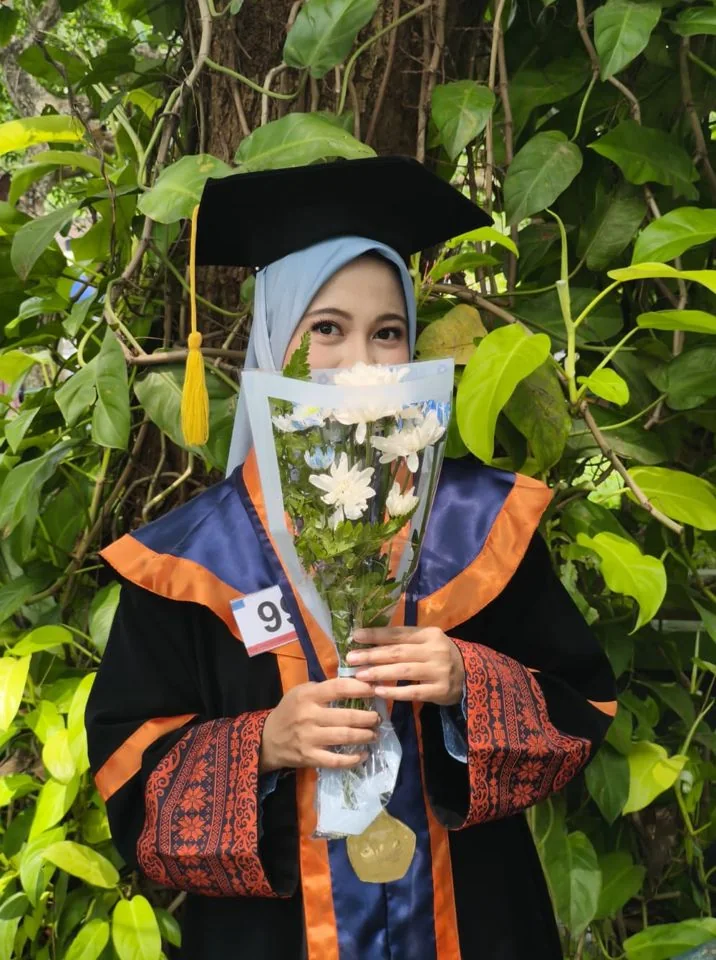
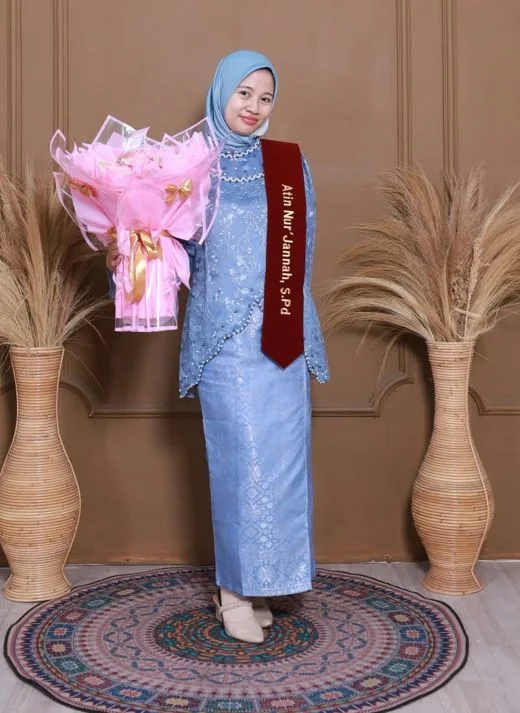
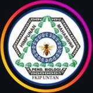
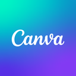

AtinNur'jannah
Lulusan Pendidikan Biologi dengan minat di media sosial dan konten.
Terbiasa bekerja teliti dan bertanggung jawab, baik mandiri maupun dalam tim.


Halo, saya Atin.
Saya lulusan S1 Pendidikan Biologi Universitas Tanjungpura. Saya teliti, bertanggung jawab, dan nyaman bekerja mandiri maupun dalam tim. Saya juga cepat beradaptasi dengan lingkungan baru dan senang berkomunikasi.
Saat ini saya mencari kesempatan di bidang manajemen, komunikasi, administrasi, pengelolaan media, dan pengembangan konten.
Pengalaman organisasi.
Himpunan Mahasiswa Pendidikan Biologi
2022–2023 | Divisi Jaringan dan Komunikasi, Bidang Media dan Informasi- Membuat dan mendesain konten publikasi untuk berbagai kegiatan organisasi
- Mengelola media sosial dan menyebarluaskan informasi kegiatan kepada mahasiswa
- Berkoordinasi dengan bidang lain dalam menyusun dan menerbitkan informasi kegiatan
- Berkontribusi pada program kerja: seminar, workshop, dan pelatihan desain

Konten yang pernah tayang.
Lima contoh publikasi dan dokumentasi dari akun Instagram Himbio FKIP UNTAN pada 2023, masa saya bertugas di bidang Media dan Informasi. Geser atau klik kartu untuk melihat konteksnya.
Dua panggung publikasi.
Konten di atas tayang lewat akun resmi Himpunan Mahasiswa Pendidikan Biologi FKIP UNTAN. Saya ikut mengelola informasi di kedua platform ini.
Poster kegiatan, penyambutan mahasiswa baru, dan kabar prestasi prodi tayang di sini.
Halaman kreator digital himpunan untuk menjangkau mahasiswa dan alumni, lengkap dengan Reels, foto, dan acara.
Pengalaman lainnya.
Mengajar di sekolah dan membantu di laboratorium.
Keahlian.
Gerakkan kursor di atas kartu untuk memiringkannya.

Canva
Desain poster dan konten publikasi.
Microsoft PowerPoint
Materi seminar, workshop, dan praktikum.
Microsoft Excel
Pengelolaan dan input nilai mahasiswa.
Microsoft Word
Administrasi dan dokumen kegiatan.
Yuk, ngobrol.
Ada peluang kerja, proyek konten, atau sekadar ingin kenalan? Pilih kontak di samping.